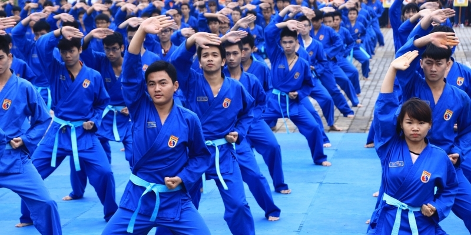
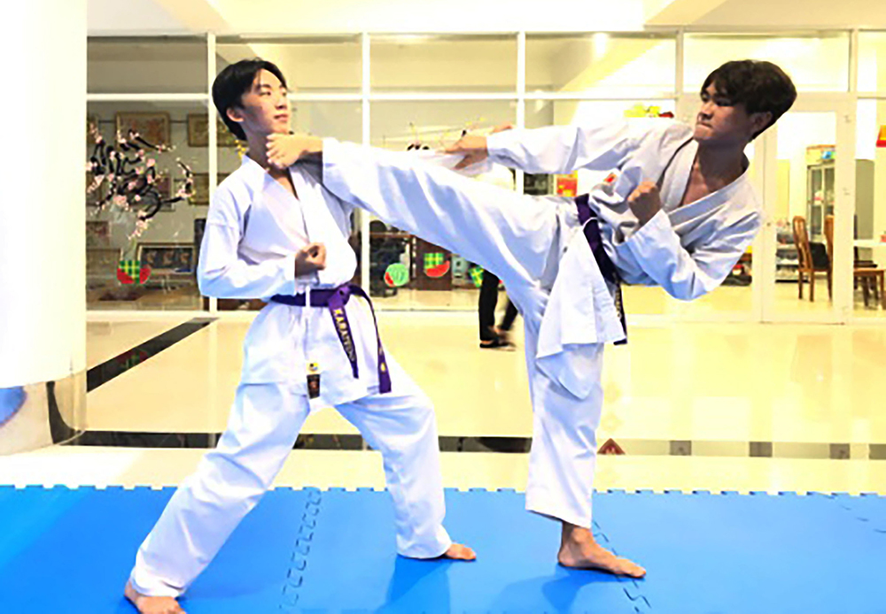
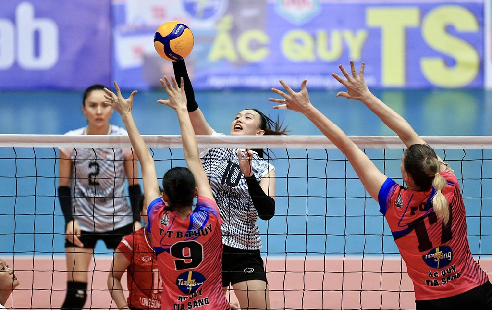

CLB VovinamCLB Vovinam được thành lập vào ngày 28/03/2021 với đề xuất của học sinh và sự giúp đỡ từ BGH và Đoàn thanh niên của trường. Ngày đầu thành lập với số lượng 15 học sinh hỗ trợ lên ý tưởng xây dựng CLB. Sau 7 tháng thành lập CLB chào đón thêm 50 thành viên mới. Vì tình hình dịch bệnh nên CLB hiện tại vẫn duy trì hình thức rèn luyện, sinh hoạt online. CLB Vovinam được thành lập với mục đích tạo sân chơi, rèn luyện thể dục thể thao, năng cao sức khỏe. Là nơi giao lưu, tập luyện và trao đổi học hỏi về võ thuật và thể dục thể thao của các bạn học sinh của trường.  |
CLB KaratedoCâu lạc bộ Võ thuật có tên gọi là CLB Karatedo, với mục đích tạo ra sân chơi, nơi giao lưu, trao đổi học tập, rèn luyện thể dục thể thao cũng như phát triển phong trào TD-TT của trường. Được sự giúp đỡ của văn phòng Đoàn Trường và được sự chấp thuận của Nhà Trường. Sau thời gian chiêu sinh kêu gọi và có màn biểu diễn đầu tiên tại khai giảng chào đón học sinh năm học 2014 - 2015, CLB đã chào đón 16 bạn đầu tiên theo tập. Sau quãng thời gian hình thành và phát triển CLB đã đón hơn 300 lượt sinh viên, học sinh, người lớn và thanh thiếu niên trên địa bàn tham gia tập luyện và thi đấu. Kỉ niệm năm thành Lập CLB - Sinh nhật CLB: Đây là một hoạt động thường niên nhằm nhìn lại chặng đường hoạt động của CLB từ lúc mới hình thành cho đến hiện tại, đồng thời đây cũng là cơ hội để tất cả mọi người có thể gập mặt và kết nối lại với nhau, đặc biệt là có thể giúp cho các võ sinh mới có dịp gặp gỡ và nói chuyện cùng các anh chị cựu võ sinh. Từ đó, có thể giúp cho các bạn dễ dàng hòa nhập và thoải mái thể hiện bản thân hơn.  |
CLB Bóng chuyềnCLB Bóng Chuyền được thành lập vào ngày 30/09/2019, là một trong 15 CLB trực thuộc thành phố, hoạt động về lĩnh vực thể thao và quy tụ các bạn học sinh có chung niềm đam mê bóng chuyền. Với mong muốn tạo ra một sân chơi lành mạnh, mang tính giải trí và rèn luyện sức khỏe cho các bạn, CLB là nơi dành cho các bạn trẻ được tự do thể hiện khả năng của bản thân với trái bóng, có cơ hội tìm được những người bạn cũng chung sở thích, đồng thời kết nối mọi người lại gần với nhau. Hơn 12 năm kể từ ngày được thành lập, CLB đã gặt hái được nhiều thành công nhất định, tạo ra được nhiều cuộc thì đặc sắc đem lại kết quả ngoài mong đợi, được đông đảo sinh viên yêu mến và ủng hộ. Những thành tựu đó phần lớn nhờ sự nhiệt tình của tất cả thành viên trong CLB cũng như công sức gây dựng và hoạt động của Ban Chủ nhiệm, Ban Thư ký, Ban Truyền thông và Ban Kỹ thuật. Trong tương lai, CLB Bóng Chuyền hứa hẹn sẽ ngày càng phát triển và vững mạnh, gặt hái được nhiều thành công hơn nữa, tạo được đầu ăn sâu đậm trong lòng mọi người.  |